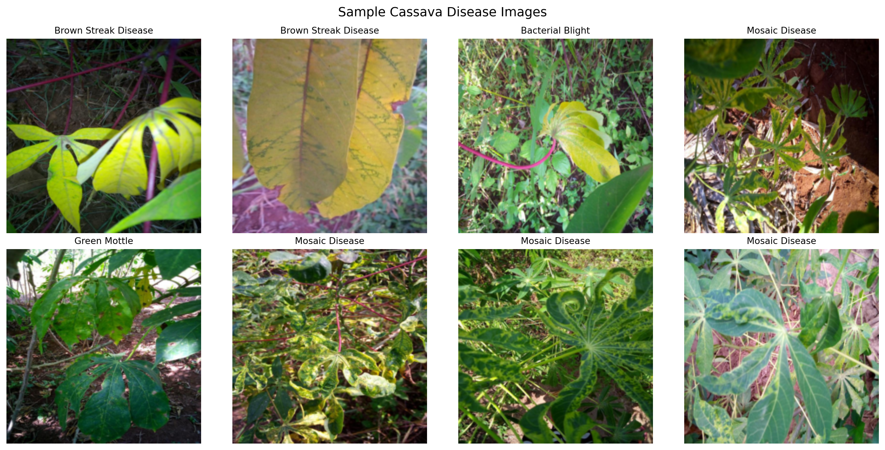
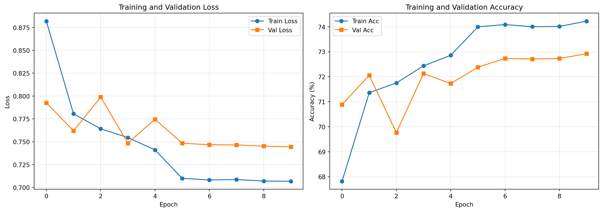

Ghana AI Talent Accelerator - Deep Learning Foundations
Author
Ghana AI Accelerator
1 1. The Transfer Learning Revolution
1.1 1.1 Why Train From Scratch?
Training a deep neural network from scratch requires: - Millions of labeled images - Hundreds of GPU hours - Expert hyperparameter tuning - Massive computational resources
Most organizations don’t have these resources. But here is the good news: we don’t need to!
1.2 1.2 The Transfer Learning Insight
Transfer Learning means taking a model trained on one task and adapting it for another.
The analogy: Imagine learning to drive a truck after learning to drive a car. You don’t relearn what a steering wheel is or how brakes work. You just adapt your existing knowledge.
In deep learning: - Models trained on ImageNet learn general visual features - Early layers detect edges, textures, shapes - These features are useful for almost any vision task - We just need to retrain the final layers for our specific problem
1.3 1.3 Benefits of Transfer Learning
Aspect
From Scratch
Transfer Learning
Training Data
1M+ images
1,000-10,000 images
Training Time
Days/weeks
Minutes/hours
Accuracy
Variable
Often better
GPU Cost
$1000s
$10s
Bottom line: Transfer learning democratizes deep learning.
2 2. Understanding Pre-trained Models
2.1 2.1 What is ImageNet?
ImageNet is a dataset of 1.4 million labeled images across 1000 categories.
Models trained on ImageNet learn a general-purpose visual representation useful for almost any vision task.
2.2 2.2 Loading a Pre-trained Model
import torchimport torch.nn as nnfrom torchvision import models# Load pre-trained ResNet18resnet18 = models.resnet18(weights='IMAGENET1K_V1')print("ResNet18 loaded")print(f"Total parameters: {sum(p.numel() for p in resnet18.parameters()):,}")# Look at the final layerprint(f"\nOriginal final layer: {resnet18.fc}")print(f"Input features: {resnet18.fc.in_features}")print(f"Output classes: {resnet18.fc.out_features}")
ResNet18 loaded
Total parameters: 11,689,512
Original final layer: Linear(in_features=512, out_features=1000, bias=True)
Input features: 512
Output classes: 1000
3 3. Transfer Learning in Practice
3.1 3.1 The Two-Phase Approach
Phase 1: Feature Extraction - Freeze all pre-trained layers - Only train a new final layer - Fast training, prevents overfitting
Phase 2: Fine-Tuning (optional) - Unfreeze later layers - Train with very low learning rate - Adapts features to your specific task
3.2 3.2 Phase 1 - Feature Extraction
# Load pre-trained ResNetmodel = models.resnet18(weights='IMAGENET1K_V1')# Freeze all layersfor param in model.parameters(): param.requires_grad =False# Replace final layer for our task (5 classes for cassava disease)num_classes =5model.fc = nn.Linear(model.fc.in_features, num_classes)# Check trainable parameterstrainable =sum(p.numel() for p in model.parameters() if p.requires_grad)total =sum(p.numel() for p in model.parameters())print(f"Trainable parameters: {trainable:,} ({trainable/total*100:.2f}%)")print(f"Frozen parameters: {total-trainable:,}")
# Unfreeze all layersfor param in model.parameters(): param.requires_grad =True# Use a much lower learning rate for fine-tuningimport torch.optim as optimoptimizer = optim.Adam(model.parameters(), lr=0.0001) # 10x lower!print("Phase 2: Fine-tuning entire network")print(f"Learning rate: 0.0001")print(f"All {total:,} parameters now trainable")
Phase 2: Fine-tuning entire network
Learning rate: 0.0001
All 11,179,077 parameters now trainable
Now let’s apply transfer learning to a real-world problem: Cassava Disease Detection. This is crucial for food security in Africa, as cassava is a staple crop and diseases can devastate yields.
4.1 4.1 About the Dataset
The cassava dataset is located in cassava_dataset/data/ and contains 5 classes:
Class
Description
**Cassava___bacterial_blight**
Cassava bacterial blight (CBB)
**Cassava___brown_streak_disease**
Cassava brown streak disease (CBSD)
**Cassava___green_mottle**
Cassava green mottle (CGM)
**Cassava___healthy**
Healthy cassava plants
**Cassava___mosaic_disease**
Cassava mosaic disease (CMD)
Note: The cassava_dataset/ folder is excluded from git (see .gitignore), so make sure you have the dataset locally before running the code.
4.2 4.2 Student Workflow Guide
Follow these steps to build your cassava disease classifier:
4.2.1 Step 1: Setup and Explore
# Required importsimport torchimport torch.nn as nnimport torch.optim as optimfrom torchvision import models, datasets, transformsfrom torch.utils.data import DataLoader, random_splitimport matplotlib.pyplot as pltimport numpy as npfrom pathlib import Pathfrom PIL import Image# Check devicedevice = torch.device('cuda'if torch.cuda.is_available() else'cpu')print(f"Using device: {device}")
Using device: cuda
4.2.2 Step 2: Explore Dataset Structure
# Set the path to your datasetdata_dir = Path('cassava_dataset/data')# Explore the structureprint("Cassava Disease Dataset")print("="*40)class_names = []for class_dir insorted(data_dir.iterdir()):if class_dir.is_dir(): class_name = class_dir.name class_names.append(class_name) num_images =len(list(class_dir.glob('*.jpg')))print(f"{class_name}: {num_images} images")print(f"\nTotal classes: {len(class_names)}")
# Get a batch of training imagesimages, labels =next(iter(train_loader))# Create class mappingclass_to_idx = full_dataset.class_to_idxidx_to_class = {v: k.replace('Cassava___', '').replace('_', ' ').title() for k, v in class_to_idx.items()}# Plot sample imagesfig, axes = plt.subplots(2, 4, figsize=(14, 7))axes = axes.flatten()for i inrange(min(8, len(images))): img = images[i] label = labels[i].item()# Denormalize for display img_np = img.numpy().transpose((1, 2, 0)) mean = np.array(normalize_mean) std = np.array(normalize_std) img_np = std * img_np + mean img_np = np.clip(img_np, 0, 1) axes[i].imshow(img_np) axes[i].set_title(idx_to_class[label], fontsize=10) axes[i].axis('off')plt.suptitle('Sample Cassava Disease Images', fontsize=14)plt.tight_layout()plt.show()

4.2.5 Step 5: Build Transfer Learning Model
# Load pre-trained ResNet18model = models.resnet18(weights='IMAGENET1K_V1')# PHASE 1: Freeze all layers (Feature Extraction)for param in model.parameters(): param.requires_grad =False# Replace final layer for 5 classesnum_classes =len(class_names)model.fc = nn.Linear(model.fc.in_features, num_classes)# Move to devicemodel = model.to(device)# Count parameterstotal_params =sum(p.numel() for p in model.parameters())trainable_params =sum(p.numel() for p in model.parameters() if p.requires_grad)print(f"Model Architecture: ResNet18 (pre-trained on ImageNet)")print(f"Total parameters: {total_params:,}")print(f"Trainable parameters: {trainable_params:,} ({trainable_params/total_params*100:.2f}%)")print(f"Frozen parameters: {total_params-trainable_params:,}")
Model Architecture: ResNet18 (pre-trained on ImageNet)
Total parameters: 11,179,077
Trainable parameters: 2,565 (0.02%)
Frozen parameters: 11,176,512
4.2.6 Step 6: Setup Training
# Loss functioncriterion = nn.CrossEntropyLoss()# Optimizer (only train the final layer in Phase 1)optimizer = optim.Adam(model.fc.parameters(), lr=0.001)# Learning rate schedulerscheduler = optim.lr_scheduler.StepLR(optimizer, step_size=5, gamma=0.1)print("Training Configuration (Phase 1 - Feature Extraction)")print("-"*50)print(f"Loss function: CrossEntropyLoss")print(f"Optimizer: Adam (learning rate: 0.001)")print(f"Only final layer is trainable")print(f"LR Scheduler: StepLR (step=5, gamma=0.1)")
Training Configuration (Phase 1 - Feature Extraction)
--------------------------------------------------
Loss function: CrossEntropyLoss
Optimizer: Adam (learning rate: 0.001)
Only final layer is trainable
LR Scheduler: StepLR (step=5, gamma=0.1)
# Training loopnum_epochs =10train_losses, train_accs = [], []val_losses, val_accs = [], []best_val_acc =0.0print("Starting Training (Phase 1 - Feature Extraction)")print("="*50)for epoch inrange(num_epochs):print(f"\nEpoch {epoch+1}/{num_epochs}")print("-"*30)# Train train_loss, train_acc = train_one_epoch( model, train_loader, criterion, optimizer, device ) train_losses.append(train_loss) train_accs.append(train_acc)# Validate val_loss, val_acc = validate(model, val_loader, criterion, device) val_losses.append(val_loss) val_accs.append(val_acc)# Step the scheduler scheduler.step()print(f"Train Loss: {train_loss:.4f} | Train Acc: {train_acc:.2f}%")print(f"Val Loss: {val_loss:.4f} | Val Acc: {val_acc:.2f}%")# Save best modelif val_acc > best_val_acc: best_val_acc = val_acc torch.save(model.state_dict(), 'best_cassava_model.pth')print(f"** Best model saved! (Val Acc: {val_acc:.2f}%)")print(f"\nTraining complete! Best validation accuracy: {best_val_acc:.2f}%")
Starting Training (Phase 1 - Feature Extraction)
==================================================
Epoch 1/10
------------------------------
Train Loss: 0.8819 | Train Acc: 67.82%
Val Loss: 0.7927 | Val Acc: 70.89%
** Best model saved! (Val Acc: 70.89%)
Epoch 2/10
------------------------------
Train Loss: 0.7806 | Train Acc: 71.36%
Val Loss: 0.7620 | Val Acc: 72.06%
** Best model saved! (Val Acc: 72.06%)
Epoch 3/10
------------------------------
Train Loss: 0.7642 | Train Acc: 71.75%
Val Loss: 0.7989 | Val Acc: 69.77%
Epoch 4/10
------------------------------
Train Loss: 0.7546 | Train Acc: 72.44%
Val Loss: 0.7485 | Val Acc: 72.13%
** Best model saved! (Val Acc: 72.13%)
Epoch 5/10
------------------------------
Train Loss: 0.7411 | Train Acc: 72.86%
Val Loss: 0.7747 | Val Acc: 71.73%
Epoch 6/10
------------------------------
Train Loss: 0.7100 | Train Acc: 74.00%
Val Loss: 0.7484 | Val Acc: 72.38%
** Best model saved! (Val Acc: 72.38%)
Epoch 7/10
------------------------------
Train Loss: 0.7082 | Train Acc: 74.09%
Val Loss: 0.7467 | Val Acc: 72.73%
** Best model saved! (Val Acc: 72.73%)
Epoch 8/10
------------------------------
Train Loss: 0.7087 | Train Acc: 74.00%
Val Loss: 0.7465 | Val Acc: 72.71%
Epoch 9/10
------------------------------
Train Loss: 0.7070 | Train Acc: 74.01%
Val Loss: 0.7451 | Val Acc: 72.73%
Epoch 10/10
------------------------------
Train Loss: 0.7067 | Train Acc: 74.22%
Val Loss: 0.7446 | Val Acc: 72.92%
** Best model saved! (Val Acc: 72.92%)
Training complete! Best validation accuracy: 72.92%
4.2.9 Step 9: Visualize Training Progress
# Plot training curvesfig, (ax1, ax2) = plt.subplots(1, 2, figsize=(14, 5))# Loss plotax1.plot(train_losses, label='Train Loss', marker='o')ax1.plot(val_losses, label='Val Loss', marker='s')ax1.set_xlabel('Epoch')ax1.set_ylabel('Loss')ax1.set_title('Training and Validation Loss')ax1.legend()ax1.grid(True, alpha=0.3)# Accuracy plotax2.plot(train_accs, label='Train Acc', marker='o')ax2.plot(val_accs, label='Val Acc', marker='s')ax2.set_xlabel('Epoch')ax2.set_ylabel('Accuracy (%)')ax2.set_title('Training and Validation Accuracy')ax2.legend()ax2.grid(True, alpha=0.3)plt.tight_layout()plt.show()

4.2.10 Step 10: Optional - Phase 2 Fine-Tuning
# Uncomment to run fine-tuningprint("Starting Phase 2: Fine-Tuning")print("="*40)# Load best model from Phase 1model.load_state_dict(torch.load('best_cassava_model.pth'))# Unfreeze all layersfor param in model.parameters(): param.requires_grad =True# Use much lower learning rateoptimizer = optim.Adam(model.parameters(), lr=0.0001)print("All layers unfrozen with lr=0.0001")print("Fine-tune for 5 more epochs...")# Fine-tune for 5 epochsfor epoch inrange(5):print(f"\nFine-tune Epoch {epoch+1}/5") train_loss, train_acc = train_one_epoch( model, train_loader, criterion, optimizer, device ) val_loss, val_acc = validate(model, val_loader, criterion, device)print(f"Train: Loss={train_loss:.4f}, Acc={train_acc:.2f}%")print(f"Val: Loss={val_loss:.4f}, Acc={val_acc:.2f}%")
4.2.11 Step 11: Make Predictions
# Load the best modelmodel.load_state_dict(torch.load('best_cassava_model.pth'))model.eval()def predict_image(image_path, model, transform, class_names, device):"""Predict the class of a single image"""# Load and transform image img = Image.open(image_path).convert('RGB') img_tensor = transform(img).unsqueeze(0).to(device)# Predictwith torch.no_grad(): outputs = model(img_tensor) probs = torch.softmax(outputs, dim=1)[0] pred_idx = probs.argmax().item() confidence = probs[pred_idx].item()# Get class name class_name = class_names[pred_idx].replace('Cassava___', '').replace('_', ' ').title()return class_name, confidence, img# Test on a sample imagetest_image_path ='cassava_dataset/data/Cassava___healthy/995123333.jpg'pred_class, confidence, img = predict_image( test_image_path, model, val_transform, full_dataset.classes, device)print(f"Prediction: {pred_class}")print(f"Confidence: {confidence:.2%}")# Display the imageplt.figure(figsize=(6, 6))plt.imshow(img)plt.title(f"Predicted: {pred_class}\nConfidence: {confidence:.2%}", fontsize=12)plt.axis('off')plt.show()
5 5. Advanced Training Techniques
5.1 5.1 Learning Rate Scheduling
# OneCycle LR - starts low, ramps up, then downoptimizer = optim.Adam(model.parameters(), lr=0.001)scheduler = optim.lr_scheduler.OneCycleLR( optimizer, max_lr=0.01, steps_per_epoch=100, epochs=10)
Benefits: - Escapes local minima during high LR phase - Fine convergence during low LR phase
5.2 5.2 Data Augmentation
Already included in our pipeline above: - Random horizontal flip - Random rotation - Color jitter (brightness, contrast)
6 6. Model Interpretability
6.1 6.1 Why Interpretability Matters
In production (especially healthcare, agriculture, finance): - Regulations may require explainable decisions - Trust: Users need to understand why - Debugging: Find failure modes
6.2 6.2 Class Activation Mapping (CAM)
CAM shows which image regions influenced the prediction.
7 7. Production Deployment
7.1 7.1 Model Export Formats
7.1.1 PyTorch Native Format
# Save only weights (recommended)torch.save(model.state_dict(), 'cassava_model_weights.pth')# Load weights into architecturemodel = models.resnet18(weights=None)model.fc = nn.Linear(model.fc.in_features, 5)model.load_state_dict(torch.load('cassava_model_weights.pth', weights_only=True))
Forgetting to freeze: Training all layers on small data = overfitting
Wrong normalization: Must use ImageNet stats for pre-trained models
Too high LR: Destroys pre-trained features during fine-tuning
9 9. Practice Exercises
9.1 Exercise 1: Compare Architectures
Test different pre-trained models (ResNet34, MobileNet, EfficientNet) and compare: - Number of parameters - Training time - Final accuracy
9.2 Exercise 2: Data Augmentation Experiments
Try different augmentation strategies: - Remove rotation - Add more color jitter - Try random crop with different scales
9.3 Exercise 3: Build a Web API
Create a simple Flask or FastAPI application that: - Accepts image uploads - Returns disease prediction and confidence - Shows top-3 predictions
9.4 Exercise 4: Mobile Deployment
Convert your model to TensorFlow Lite or Core ML for mobile deployment.
Congratulations! You now know how to apply transfer learning to real agricultural problems and deploy models to production.
Next Steps: - Experiment with different architectures - Collect more training data for better accuracy - Deploy your model as a mobile app for farmers - Monitor performance in production
Additional Resources: - Check the docs/ folder for reference materials - PyTorch documentation: https://pytorch.org/docs/ - Transfer learning tutorial: https://pytorch.org/tutorials/beginner/transfer_learning_tutorial.html